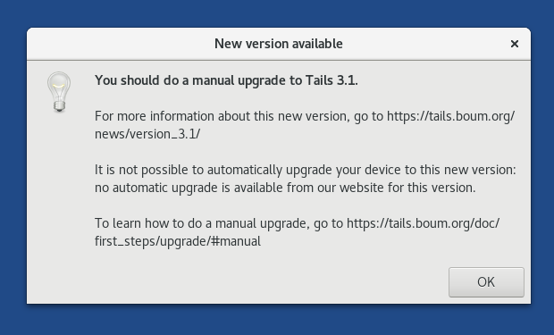

Tails includes an automatic mechanism to upgrade a USB stick to a newer version. In some cases, it is impossible to do an automatic upgrade and you might have to do a manual upgrade. This page describes both techniques.
Your Persistent Storage will be preserved by both automatic and manual upgrades.
If you use Tails from a DVD, you need to burn a new DVD.
Checking which version of Tails you are currently running
To check which version of Tails you are currently running, choose .
Automatic upgrade using Tails Upgrader
After starting Tails and connecting to Tor, Tails Upgrader automatically checks if upgrades are available and then proposes you to upgrade your USB stick. The upgrades are checked for and downloaded through Tor.
The advantages of this technique are the following:
- You only need a single Tails USB stick. The upgrade is done on the fly from a running Tails. After upgrading, you can restart and use the new version.
- The upgrade is much smaller to download than a full USB image.
- The upgrade mechanism includes cryptographic verification of the upgrade. You don't have to verify the USB image yourself anymore.
Requirements:
- A Tails USB stick.
- An Internet connection.
After connecting to Tor, if an upgrade is available, a dialog appears and proposes you to upgrade your USB stick.

If you decide to do the upgrade, click on Upgrade now, and follow the assistant through the upgrade process.
If you cannot upgrade at startup (for example, if you have no network connection by then), you can start Tails Upgrader later by opening a terminal and executing the following command:
tails-upgrade-frontend-wrapper
Troubleshooting
If an error occurs during the upgrade, the assistant proposes you to read one of the following pages:
- If an error occurs while checking for available upgrades:
file:///usr/share/doc/tails/website/doc/upgrade/error/check.en.html - If an error occurs while download the upgrade:
file:///usr/share/doc/tails/website/doc/upgrade/error/download.en.html - If an error occurs while installing the upgrade:
file:///usr/share/doc/tails/website/doc/upgrade/error/install.en.html
If your Tails USB stick fails to start after an automatic upgrade, see below how to do a manual upgrade.
Reducing the size of the download
When doing automatic upgrades, the size of the download increases over time.
You can reduce the size of the download of future automatic upgrades by doing a manual upgrade to the latest version.
Your Tails USB stick stores:
- 1 base version that you first installed or to which you last did a manual upgrade
- 1 upgrade package containing all the changes made to Tails since the base version
For example, if you install a Tails USB stick with 4.6, the base version is 4.6, and:
- The upgrade to 4.7 is 181 MB.
- The upgrade to 4.8 is 347 MB.
- The upgrade to 4.9 is 418 MB.
But if you do a manual upgrade of the same USB stick from 4.7 to 4.8, the base version becomes 4.8, and then:
- The upgrade to 4.9 is only 205 MB, instead of 418 MB when 4.6 was the base version.

Manual upgrade using Tails Installer
It might not always be possible to do an automatic upgrade as described above. For example, when:
- No automatic upgrade is available from our website for this version.
- The automatic upgrade is impossible for technical reasons (not enough memory, not enough free space on the USB stick, etc.).
- The automatic upgrade failed and you need to repair a Tails USB stick.
- You want to upgrade by cloning from another Tails USB stick which is already up-to-date, for example, when working offline or with a slow Internet connection.
After connecting to Tor, a dialog informs you if you have to upgrade your USB stick using Tails Installer to a newer version of Tails.

You can also do a manual upgrade to reduce the size of future automatic upgrades, as described above.
To do a manual upgrade, you can either:
- Download and upgrade (below)
- Upgrade by cloning from another Tails (below)
- Burn a new Tails DVD
- Upgrade your virtual machine
Download and upgrade
You need:
- Your Tails USB stick
- Another empty USB stick (at least 8 GB) Why?
- 1 hour to download Tails ( 1.1 GB )
- ½ hour to upgrade
It is currently impossible to manually upgrade a Tails USB stick while running from itself. This scenario requires creating an intermediary Tails on another USB stick, from which to upgrade your Tails.
See our instructions on how to do a manual upgrade by:
- Downloading and upgrading from your Tails (more secure)
- Downloading and upgrading from Windows (more convenient)
- Downloading and upgrading from macOS (more convenient)
- Downloading and upgrading from Linux (more convenient)
Downloading and upgrading from Windows might be less secure if your Windows has viruses. But, it might be more convenient and faster.
Upgrade by cloning from another Tails
If you know someone you trust who already did the upgrade, you can upgrade your Tails by cloning from their Tails.
You need:
- Your Tails USB stick
- Another up-to-date Tails (USB stick or DVD)
- ¼ hour to upgrade
See our instructions on how to do a manual upgrade by: